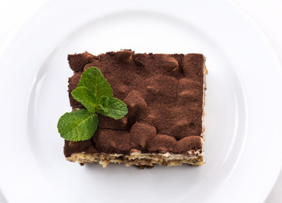

Home
Tiramisu

Description
This delicious tiramisu made with homemade mascarpone custard (no raw eggs), layers of whipped cream, and rum and coffee-soaked ladyfingers is an impressive Italian dessert. Dust the top of the tiramisu with cocoa powder before serving.
Ingredients
- 6 Large Egg Yolks
- 3/4 Cup White Sugar
- 2/3 Cup Milk
- 1 1/4 Cups Heavy Cream
- 1/2 Teaspoon Vanilla
- 1 Pound Mascarpone Cheese, at room temperature
- 1/4 Cup Strong Brewed Coffee, at room temperature
- 2 Tablespoons Rum
- 2 (3 Ounce) Packages Ladyfingers Cookies
- 1 Tablespoon Unsweetened Cocoa Powder
Steps
- Gather ingredients
- Whisk egg yolks and sugar together in a medium saucepan until well blended.
- Whisk in milk and cook over medium heat, stirring constantly, until mixture comes to a boil.
- Boil gently for 1 minute, then remove from the heat and allow to cool slightly.
- Cover tightly and chill in the refrigerator for 1 hour.
- Beat cream and vanilla in a medium bowl with an electric mixer until stiff peaks form.
- Remove egg yolk mixture from the refrigerator; add mascarpone cheese and whisk until smooth.
- Combine coffee and rum in a small bowl. Split ladyfingers in half lengthwise and drizzle with the coffee mixture. Arrange 1/2 of the soaked ladyfingers in the bottom of a 7x11-inch dish.
- Spread 1/2 of the mascarpone mixture over the ladyfingers, then spread 1/2 of the whipped cream over top. Repeat layers once more.
- Sprinkle cocoa powder over top.
- Cover and refrigerate until set, 4 to 6 hours.
- Enjoy!